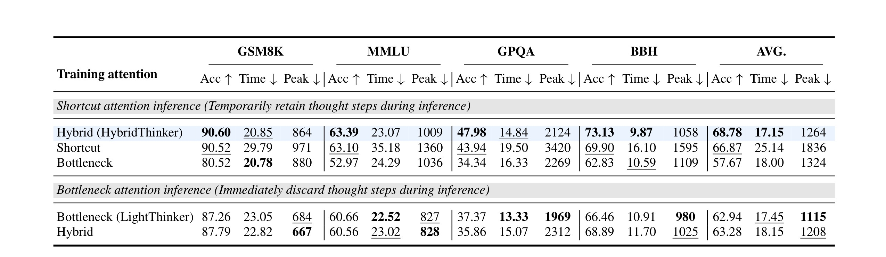
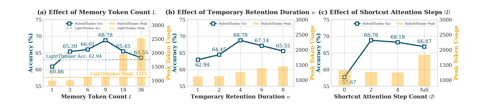

HybridThinker：用压缩记忆和短暂思考步保留加速长链推理
论文：HybridThinker: Efficient Chain-of-Thought Reasoning via Compressed Memory and Transient Thought Steps。作者来自东北大学计算机科学与工程学院，中国联通云镝智慧、NiuTrans Research 参与合作。论文入口：arXiv:2606.03768。代码/项目页状态：PDF 与 arXiv 页面未给出可核验的独立代码仓库，本笔记只依据论文正文、表格和附录实验协议整理。
1. 背景和问题
长链 CoT 推理的矛盾很直接：模型写得越长，越容易把中间条件、局部计算和自我校验表达清楚，但推理服务端需要为这些 token 持续保存 KV cache。自注意力计算随序列长度近似二次增长，KV cache 的存储又随 token 数线性增长；当推理模型在 GSM8K、MMLU、GPQA、BBH 这类任务上输出数千甚至上万 token 时，准确率收益和部署成本会被绑在一起。HybridThinker 讨论的不是普通 prompt 压缩，因为 CoT 是边生成边使用的，未来步骤无法提前看到完整推理链；它也不是常规 KV cache pruning，因为被丢掉的 cache 不能恢复，一旦删除了某个中间步骤中的细粒度数字、条件或推导痕迹，后续只能依赖压缩后的粗表示。
论文把已有方案分成两条线。第一条是 H2O、StreamingLLM、SepLLM 一类训练无关的 KV cache 裁剪：它们根据注意力、attention sink、分隔符等规则保留部分 cache。问题是推理链中的“重要信息”并不总等价于某些 token 的历史注意力权重，低 cache budget 还可能让模型反复推导，输出更长。第二条是 LightThinker、MEMENTO、MemoSight 一类 CoT compression：每生成完一个 thought step，就把该 step 压到少量 memory tokens 或短文本，再立即丢弃原始 step 的 KV cache。这样节省了缓存，但压缩表示天然会丢掉局部细节；而推理错误常常就来自这些细节，比如某一步算出的单价、约束条件、变量对应关系在后续被错取。

Figure 1 是整篇论文的问题定位图。标准推理保留所有原始 thought step，后续每一步都能读到完整细节，所以准确率高但 cache 成本高；既有 CoT 压缩方法在每个 step 被 memory tokens 压缩后立即丢弃原始 step，只保留紧凑表示，因此效率高但会损失可直接读取的局部信息；HybridThinker 的中间选择是，memory tokens 永久保留，原始 thought step 只短暂服务接下来的若干步，到达窗口边界后再丢弃。图中以 S3 服务到 S6 为例，说明它不是无节制地恢复全量 KV cache，而是在“刚生成的细节最可能被邻近步骤使用”这个假设下，给原始 step 一个有限生命周期。这个设计把长链推理里的信息分成两类：跨很远步骤仍要用的摘要信息交给 memory tokens，短距离内易被误压缩的局部细节继续由原始 KV cache 提供。
这篇论文真正抓住的难点在训练而不只是推理。直觉上，既然推理时让后续步骤直接看见前面几步，那训练时也照搬这种 attention mask 似乎最自然。但作者观察到这会诱发 shortcut learning：plain-text thought step 比 memory tokens 更可读，模型在训练中会优先沿直接路径取信息，压缩路径得不到充分训练。等到某些较早步骤在推理窗口外被丢弃时，模型必须依赖 memory tokens，却没有学好如何把信息压进去、再从中取出来。于是 HybridThinker 的问题变成一个双路径训练问题：推理需要直接路径补充细节，但训练又不能让直接路径压倒压缩路径。
因此，论文的核心贡献可以概括为三层。第一，在推理阶段引入 transient thought steps：原始 step 的 KV cache 不是立即丢弃，而是保留 w 个 step 的局部窗口。第二，在训练阶段提出 Hybrid Attention：部分 step 用 Shortcut Attention 训练直接可见性，另一部分 step 用 Bottleneck Attention 强迫模型通过 memory tokens 检索。第三，用 Qwen2.5-7B 和 Llama3.1-8B 两个 backbone、四个推理 benchmark 验证：这种有限保留能在接近 Vanilla 准确率的同时显著降低 Peak KV token 和总推理时间，并且比 LightThinker 的立即丢弃策略稳定得多。
从研究脉络看，HybridThinker 也在回应一个容易被忽略的问题：很多推理加速论文只报告更少缓存或更短时间，却没有解释模型为什么会在压缩后答错。本文把错误来源具体化为“fine-grained local information”丢失，也就是压缩后的 memory tokens 可能保留了推理大意，却丢掉了后续计算需要逐字逐数读取的局部状态。这个表述比单纯说“压缩有损”更有操作性，因为它指向了窗口化保留这种折中：不必让所有历史 step 永久可见，只需要让刚刚生成、最可能被短期复用的 step 多活几轮。对工程系统而言，这相当于把 KV cache 从单一生命周期改成分层生命周期：问题和 memory tokens 是长寿命对象，原始 thought step 是短寿命对象，窗口参数 w 就是控制服务质量和资源占用的旋钮。
2. 方法
2.1 记号：把 CoT 拆成 step、memory tokens 和 cache container
HybridThinker 延续 LightThinker 的 step-wise 压缩视角，把一次 CoT 输出写成多个 thought steps：问题为 Q，输出推理链为 Y = S1, S2, ..., Sk。每个 St 是一段以分隔符结束的 token 序列，论文沿用“\n\n”作为 step delimiter。这个 delimiter 很关键，因为方法要在 step 边界处触发压缩；如果推理没有清晰边界，系统就不知道何时应该把当前局部推理总结进 memory tokens，也不知道原始 KV cache 应该从哪个粒度开始滚动淘汰。
每个 step 后面会接一组长度为 L 的可学习特殊 token，记为 M = (m1, ..., mL)。这些 token 的内容在不同 step 上共享，但它们出现在不同位置，因此每次 forward 产生的 KV cache 不同。论文用 (\tilde{M}_t) 表示第 t 个 thought step 被压缩后得到的 memory-token KV cache，用 (\tilde{S}_t) 表示原始 thought step 的 KV cache，用 (\tilde{Q}) 表示问题的 KV cache。推理时模型真正 attend 的不是一个完整文本串，而是一个 cache container (C_t)：它包含问题 cache、所有已经产生的 memory caches，以及窗口内还没过期的原始 thought-step caches。
这里有一个值得注意的设计边界：memory tokens 是长期记忆，所有 (\tilde{M}_1, ..., \tilde{M}_t) 会随着推理推进持续保留；原始 thought step 是短期记忆，只在最近 w 个 step 以内有效。这样做把“压缩”与“短期细节缓存”分开，而不是要求 memory tokens 单独承担所有信息。对长链推理来说，这更符合推理过程的时间局部性：刚算出的中间数值、刚排除的选项、刚定义的变量名往往在接下来的几步最常用，过了若干步后则只需要一个更粗的摘要。
2.2 推理过程：生成、压缩、滚动更新
推理阶段每个 step 重复三件事。第一，模型基于当前 cache container 生成下一个 thought step：
符号解释：(S_t) 是第 t 个 thought step，(P_\theta) 是参数为 (\theta) 的语言模型条件分布，(C_t) 是当前可见的 KV cache container；点号表示模型在该条件下采样或贪心解码得到 step token。这里的核心不是采样形式，而是 (C_t) 已经被 HybridThinker 改造成“问题 cache + 历史 memory cache + 窗口内原始 step cache”的混合容器。
这个公式说明，HybridThinker 不改变 LLM 的自回归生成方式；变化发生在 (C_t) 的内容上。初始 (C_1) 只有问题 cache (\tilde{Q})。生成 (S_t) 的同时，解码过程自然产生该 step 的 KV cache (\tilde{S}_t)。
第二，当前 step 结束后，模型用 memory tokens 对它做一次压缩 forward：
这里 memory tokens 能 attend 当前 cache container 和新生成的原始 step，所以它们不是孤立地读 (S_t)，而是在已有上下文中吸收当前 step 的信息。这个细节决定了 (\tilde{M}_t) 的语义不只是“当前段落摘要”，还包含它与问题、前面 memory tokens、窗口内原始 step 的关系。换句话说，它是一个上下文化的压缩 KV 表示。
第三，系统更新下一步的 (C_{t+1})。问题 cache 和所有 memory caches 永久保留；原始 thought step cache 按窗口滚动保留。论文给出的更新式是：
这个式子直接对应 Figure 1(c)。当还没填满窗口时，新 step 和它的 memory cache 都加入容器；当窗口满了，就弹出 w-1 步之前的原始 cache，再加入最新原始 cache 和 memory cache。注意被弹出的只是 (\tilde{S}{t-w+1})，对应的 (\tilde{M}) 仍然保留。因此历史信息并没有被彻底删除，只是从可读的原始文本 KV 退化为压缩表示。
这个推理过程的好处是明确的。相对 Vanilla，它不会让所有 thought steps 永久膨胀 KV cache；相对 LightThinker，它不会在压缩之后立刻断开细粒度路径。代价也同样明确：相比立即丢弃方法，它会多保留最近若干步的原始 KV cache，因此 Peak token 会比 LightThinker 高一些。论文后面的实验表明，这个额外 cache 通常只有约 100 到 150 个 peak token 的量级，却换来显著准确率提升。
从实现角度看，滚动更新还要求推理框架能区分不同来源的 KV cache。(\tilde{Q}) 通常在 prefill 后常驻；(\tilde{M}_t) 是每个 step 完成后追加的压缩块；(\tilde{S}_t) 则需要带过期时间。若把它们简单拼成一段不可区分的历史 token，就很难在不重算的情况下弹出指定 step。因此 HybridThinker 更像是在解码器外维护一个 cache 容器，而不是只改 prompt。这个容器必须支持 append、retain 和 remove 操作，并且在 attention mask 层保证当前 step 只能看到应当可见的缓存块。论文没有展开系统实现，但从公式可以看出，正确实现的关键是按 step 边界维护 cache metadata。
另一个细节是，(\tilde{M}_t) 的生成本身也消耗一次 forward。这个额外开销之所以能被接受，是因为 memory tokens 数量 L 很小，且它换来后续丢弃长 step 原始 KV cache 的能力。若某个 step 很短，压缩收益可能有限；若某个 step 很长，少量 memory tokens 加短期保留窗口的收益会更明显。因此该方法最适合那些推理链较长、step 边界清楚、且中间细节短期复用频繁的任务。
2.3 训练数据重构：把 memory tokens 插进推理链
训练时，论文使用 CoT 数据对模型做微调。每个训练样本是 ((Q,Y))，其中 Y 先按 delimiter 切成 (S_1, ..., S_k)。然后在中间 step 后插入 memory token 序列，形成：
这里 (\oplus) 是拼接。最后一个 step 后面不一定需要再压缩，因为答案已经在 Y 中。所有 (M_t) 的 token 内容相同，但由于位置不同、可见上下文不同，它们的 KV 表示承担不同 step 的压缩功能。训练数据重构的目的，是让模型在读完每个 step 后实际经历“用 memory tokens 写入压缩表示”的过程，而不是在推理时突然遇到从未训练过的特殊 token。
这个重构看似简单，却带来 attention mask 的核心选择：每个位置到底能看见哪些历史 token？如果完全按标准 causal mask，所有后续位置都能看到所有原始 thought steps，那 memory tokens 不需要承担压缩责任；如果完全 bottleneck，后续位置只能通过 memory tokens 看历史，就训练出了压缩能力，但推理时又有短暂直接路径，训练和推理不一致。HybridThinker 的训练方案就是在这两个极端之间安排可见性。
数据重构还有一个隐含约束：memory tokens 不应该被当作普通答案 token 学习输出。它们更像一组可学习的读写槽位，位置不同、上下文不同，产生的 KV 表示也不同。如果把它们纳入语言建模损失，模型可能学习表面 token 形式，而不是让这些位置承载压缩语义。论文只对 thought-step token 求损失，正是为了让 memory tokens 的作用通过后续推理质量间接体现。这个选择让训练目标保持简单，也避免引入额外标注的“正确摘要”。
2.4 Shortcut Attention：推理一致但会养成捷径
Shortcut Attention 是最贴近推理阶段的 mask。对某个 (S_t)，它在自己的 step 内可见，也对后续 w-1 个 steps 及其 memory tokens 可见；超过窗口后，后续 step 不能再直接 attend (S_t)，只能通过 (M_t) 获取压缩信息。如果训练完全使用这种 mask，模型会经历和推理相同的短期保留模式。
问题在于，训练目标是预测 thought-step token，而 plain-text (S_t) 的信息比 (\tilde{M}_t) 更容易读取。只要直接路径存在，后续 step 往往不必费力从 memory tokens 中重建信息。这样一来，memory tokens 可能只学到弱压缩，或者学到足够服务局部预测但不够服务窗口外检索的表示。等推理推进到某个较早 (S_t) 被弹出时，模型突然只能读 (\tilde{M}_t)，错误就会暴露出来。论文把这称为 shortcut learning。
Shortcut Attention 的失败不是因为临时保留本身错误，而是因为训练信号没有均衡地分配到两条路径。直达路径要学，因为推理时确实存在；压缩路径也要学，因为窗口外只能依赖它。若训练只让模型选择最容易的路径，就会得到一个短期表现不错、长程压缩能力不足的模型。
如果把 Shortcut Attention 放到服务场景中理解，它看起来很诱人：模型在训练中始终看见与推理相同的局部窗口，理论上 train-inference gap 最小。但 LLM 的学习目标不是显式平衡路径，而是降低下一个 token 的损失。只要 plain-text 旧 step 比 memory tokens 更容易被利用，梯度就会沿更短路径优化。于是训练一致性和路径均衡之间产生冲突：完全一致的 mask 反而让模型在窗口外变脆弱。HybridThinker 的贡献之一就是把这个冲突明确写出来，并用消融表证明 naive shortcut 训练会造成更高 Time 和 Peak。
2.5 Bottleneck Attention 与 Hybrid Attention：同时训练两条路径
Bottleneck Attention 采取相反策略：屏蔽 (S_t) 到后续 thought steps 的直接路径，让后续只能通过 (M_t) 读到过去信息。这样可以强制 memory tokens 学会压缩和检索，类似 LightThinker 的训练环境。它解决了 shortcut learning，却引入另一个问题：推理阶段 HybridThinker 明明会保留最近 w 个原始 step，模型在训练中却从未学习如何利用这条直接路径。结果可能是压缩路径强了，但直接路径没有被校准，训练和推理仍然不一致。

Figure 2 展示了论文的关键训练设计。左侧 Shortcut Attention 说明推理时 (S_t) 对后续窗口可见，但如果训练也完全这样做，直接路径会成为 dominant path，压缩路径被削弱。中间 Bottleneck Attention 则把直接路径 mask 掉，强迫信息经过 (M_t)，但它没有训练推理时可用的短期 plain-text 读取能力。右侧 Hybrid Attention 把同一个训练序列里的 thought steps 随机分成两类：一部分用 Shortcut Attention，一部分用 Bottleneck Attention。这样模型在一条样本中既要学会从原始 thought step 直接补细节，又要学会在直接路径不可用时从 memory tokens 恢复信息。图里的 Mix 不是后处理技巧，而是 attention mask 本身的随机组合。
论文用集合 (I) 表示被分配到 Shortcut Attention 的 step 索引，(S_{shortcut}={S_t \mid t \in I})，其余为 (S_{bottleneck})。Hybrid Attention 的 mask (A_{u,v}) 大致分四类可见性：问题 Q 在 causal 前缀内可见；所有 memory tokens 在 causal 前缀内可见；若某个 (S_t) 属于 bottleneck 集合，它只对自身和紧随其后的 (M_t) 可见；若属于 shortcut 集合，它还对从 (S_t) 到 (S_{t+w-1}) 之间的 steps 和 memory tokens 可见。论文公式写为：
当且仅当 (x_v) 属于上述允许集合并满足因果顺序，否则 (A_{u,v}=0)。这个公式的重点不在矩阵形式，而在“同一训练样本内同时存在两种路径压力”：被 bottleneck 的 step 逼迫 memory tokens 可用，被 shortcut 的 step 让模型适应推理时的短期直接读取。
默认设置里，HybridThinker 使用 L=9 个 memory tokens，临时保留窗口 w=4，Shortcut Attention step 数 (|I|=2)。这意味着每个中间 step 的原始 KV cache 最多服务包括自身在内的 4 个 step；训练时每个样本只让部分 step 走 shortcut，避免所有 step 都把直接路径当成最省力的信息通道。
Hybrid Attention 的随机性也不是为了正则化而随意混合。它针对的是同一条推理链里不同 step 的信息通路分工：某些 step 的原文对后续可见，模型学习如何利用短期细节；另一些 step 的原文被遮住，模型被迫检查 memory tokens 是否足够。这样训练出的模型在推理时遇到窗口内 step，可以走直接路径；遇到窗口外 step，也不至于因为压缩路径欠训练而失效。若把它类比为记忆系统，Shortcut Attention 训练工作记忆的读取，Bottleneck Attention 训练长期压缩记忆的读取，Hybrid Attention 则让两套能力在同一模型里共存。
公式 (5) 的四行可见性也提供了实现检查清单。Q 必须作为全局问题条件在因果前缀内可见；所有 memory tokens 必须能被后续步骤读取，否则长期压缩失效；bottleneck step 的原文只能服务自身和自己的 memory tokens；shortcut step 的原文只能服务有限窗口，不能无限向后泄露。只要其中一条写错，实验结论就可能被污染。例如 shortcut 原文泄露到窗口外，会高估准确率；memory tokens 不全局可见，会低估压缩路径；训练 mask 和推理 cache 更新不一致，则会把方法问题伪装成实现问题。
2.6 损失函数：只监督 thought-step token
训练目标仍是标准交叉熵，但只对 thought-step token 计算损失，问题 token 和 memory tokens 不参与损失：
其中 (X_u={x_v \mid A_{u,v}=1, v<u}) 是位置 u 可见的历史 token 集合。memory tokens 不被直接要求生成某个文本答案，它们的能力来自后续 thought-step token 的预测需求：如果 (M_t) 压缩得不好，后续位置在 bottleneck 情况下就无法正确预测推理内容，损失会反向推动 memory-token 表示变得有用。
这种训练方式保留了 LLM fine-tuning 的简洁性，不需要额外 teacher、重建目标或显式摘要标注。但它也说明 HybridThinker 的成功依赖 CoT 数据的 step 分割质量。delimiter 如果不稳定，(S_t) 的粒度就会漂移；粒度太粗，memory tokens 难以压缩；粒度太细，窗口内保留的原始 KV cache 增加频繁，系统收益会被削弱。
从参数效率角度看，损失函数没有为 memory tokens 添加额外 head 或 auxiliary decoder，因此模型结构基本保持原样。新增的主要是特殊 token embedding、训练序列插入逻辑、attention mask 和推理 cache 管理。这个选择让 HybridThinker 更容易复用现有 instruction tuning 管线，但也意味着所有压缩能力都要从 CoT 数据中学出来。如果训练数据中的 step 本身含有大量冗余、自相矛盾或 delimiter 不稳定，memory tokens 学到的也会是这些噪声的压缩表示。
综合方法部分，可以把 HybridThinker 看成一个受控的信息通道设计。推理阶段控制信息保存多久，训练阶段控制信息从哪条路径流动，损失函数控制哪些位置真正承担预测责任。三者缺一不可：只有推理窗口没有混合训练，会有捷径；只有 bottleneck 训练没有推理窗口，会丢掉局部细节；只有 memory tokens 没有清晰 step 边界，则压缩触发点不稳定。
3. 实验结果
3.1 主结果：接近 Vanilla，明显超过既有 CoT 压缩
实验使用两个 backbone：Qwen2.5-7B 和 Llama3.1-8B。对比方法包括普通 CoT prompting、Distill-R1、无压缩的 Vanilla、训练无关的 H2O 和 SepLLM，以及同属 step-wise CoT compression 的 LightThinker。训练方法都在 Bespoke-Stratos-17k 上微调 5 个 epoch，评测 benchmark 包括 GSM8K、MMLU、GPQA 和 BBH。指标有三类：Acc 表示任务准确率，Time 表示所有样本总推理时间，Peak 表示 KV cache 中存储的最大 token 数。

Table 1 是最重要的证据。Qwen2.5-7B 上，HybridThinker 的平均准确率为 68.78，和无压缩 Vanilla 的 68.78 持平；与此同时，平均 Time 从 Vanilla 的 21.54 降到 17.15，Peak 从 3299 降到 1264。论文据此计算，HybridThinker 相对 Vanilla 降低约 61.7% 的 peak token usage 和约 20.3% 的推理时间。与 LightThinker 相比，HybridThinker 的平均准确率从 62.94 提升到 68.78，提升 5.8 个点；Peak 从 1115 增到 1264，确实多保留了一点原始 step cache，但时间从 17.45 降到 17.15，说明更高的准确率并没有以更慢推理为代价。Llama3.1-8B 上趋势相同：HybridThinker 平均准确率 66.98，接近 Vanilla 的 68.99，也高于 LightThinker 的 64.25；Time 为 20.83，Peak 为 1233，仍大幅低于 Vanilla 的 27.32 和 3460。
这张表还说明 KV cache pruning 并不是长链推理压缩的充分答案。H2O 和 SepLLM 的 Peak 被固定到 1024 左右，看似更省缓存，但 Qwen2.5-7B 上平均准确率只有 62.33 和 58.20，且 Time 高达 46.75 和 46.26；Llama3.1-8B 上 H2O 准确率不错但 Time 仍高。原因可能是裁剪破坏了推理过程中的可恢复信息，模型为补偿不确定性生成更长链条。HybridThinker 的优势在于它并不简单删除历史，而是把历史拆成长期压缩记忆和短期原始细节两层。
3.2 消融结果：临时保留和混合训练都必要
主结果只能说明方法整体有效，Table 2 则拆开两个设计点：推理时是否临时保留 thought steps，训练时使用 Hybrid、Shortcut 还是 Bottleneck attention。表格上半部分是 shortcut inference，也就是推理时临时保留原始 steps；下半部分是 bottleneck inference，也就是推理时立即丢弃原始 steps。

Table 2 的第一层结论是，临时保留原始 thought steps 对准确率非常关键。在 Qwen2.5-7B 上，LightThinker 对应 bottleneck inference + bottleneck training，平均准确率为 62.94；而只要改成 shortcut inference，即使训练使用 naive Shortcut Attention，平均准确率也到 66.87。说明后续步骤短期读到原始细节确实能减少压缩损失。第二层结论是，naive Shortcut training 并不是最好：Hybrid training 在 shortcut inference 下达到 68.78，比 Shortcut training 的 66.87 更高，同时 Time 从 25.14 降到 17.15，Peak 从 1836 降到 1264。这个结果支持作者关于 shortcut learning 的解释：完全开放直接路径会让模型生成更长链条、占用更多 cache，未必学好压缩路径。
表格下半部分也有用。即使在 bottleneck inference 下，Hybrid training 的平均准确率 63.28 仍略高于 LightThinker 的 62.94，说明混合训练没有破坏 memory-token 压缩能力。相反，纯 Bottleneck training 在 shortcut inference 下只有 57.67，说明只训练压缩路径会严重不适应推理时直接路径存在的环境。综合来看，HybridThinker 的效果不是“多留几个 token”这么简单，而是推理机制和训练 mask 必须配套：推理给细节一个短期生命周期，训练则防止模型只依赖这个短期通道。
3.3 超参数与效率边界
作者进一步考察 L、w 和 (|I|) 三个超参数。L 是每个 step 的 memory token 数，决定压缩容量；w 是原始 thought step 的保留窗口，决定短期细节能服务多远；(|I|) 是训练中使用 Shortcut Attention 的 step 数，决定直接路径训练信号的比例。

Figure 3(a) 显示，L 从 1 增到 9 时准确率从 60.86 上升到 68.78，说明 memory token 容量不足会限制压缩效果；但继续增到 18 或 36 时准确率反而下降，同时 Peak 继续上升，说明更多 memory tokens 会带来冗余上下文和额外干扰。Figure 3(b) 显示，w=1 等于不保留原始 step，准确率接近 LightThinker；w=2 有提升但不够；w=4 达到 68.78；继续增加到 6 或 8，准确率下降而 Peak 上升。这说明原始细节的价值主要集中在邻近几步，过长窗口会把更多旧信息暴露给模型，既增加成本也可能引入噪声。Figure 3(c) 显示，(|I|=0) 的纯 bottleneck 训练只有 57.67，(|I|=2) 最好，(|I|=4) 略降，full shortcut 降到 66.87。这个趋势与 shortcut learning 假设一致：一点直接路径训练是必要的，全部直接路径训练则会削弱压缩路径。
3.4 生成长度与案例分析
虽然本笔记没有裁入 Figure 4 和 Figure 5，但它们补充了主结果背后的行为解释。Figure 4 比较平均生成 token 数，HybridThinker 在 Qwen2.5-7B 和 Llama3.1-8B 上分别生成 2518 和 2559 个 token，短于 Vanilla、H2O 和 LightThinker。这个现象解释了为什么 HybridThinker 即使比 LightThinker 多保留一点 peak cache，整体 Time 仍能相近甚至更低：它减少了冗余推理链，而不是靠裁剪后让模型反复补偿。
Figure 5 的案例更具体。数学题中，LightThinker 在 thinking 阶段正确算出每次票价为 4 美元，但在 solution 阶段从压缩记忆中错误取回为 8 美元，最终答案错成 42。HybridThinker 因为短期保留原始 thought step，后续能读到刚算出的细粒度数值，13 步内完成正确推理。Shortcut Training 版本虽然也答对，却用了更多 thought 和 solution steps，说明它能利用直接路径，但没有被充分训练去高效使用压缩路径。这个案例把 Table 2 的消融变成了可解释错误：即时丢弃会导致压缩检索错误，完全 shortcut 训练会导致冗余推理，混合训练才让两条路径都保持可用。
4. 总结
HybridThinker 的价值在于把 CoT 压缩从“压完就删”推进到“长期压缩记忆 + 短期原始细节”的混合记忆机制。它承认 memory tokens 很难无损保存所有局部信息，因此给原始 thought step 一个有限窗口；同时它也承认直接路径太容易被模型滥用，因此用 Hybrid Attention 在训练中交替施加 shortcut 和 bottleneck 约束。实验上，它在 Qwen2.5-7B 上达到 Vanilla 级别平均准确率，在 Llama3.1-8B 上接近 Vanilla，并显著超过 LightThinker，同时保留较低 Peak 和更短 Time。这说明长链推理加速不一定要在“全量 cache”和“立即丢弃”之间二选一。
局限也比较清楚。第一，HybridThinker 仍然比立即丢弃方法多保留最近 thought steps，极端低显存场景下可能需要把 L 或 w 调小。第二，它依赖明确 step delimiter；对于自由格式、不稳定分段或模型不愿输出清晰段落的推理，压缩触发点会变得不可靠。第三，实验主要集中在 7B/8B 级别模型和四个离线 reasoning benchmark，是否能直接迁移到更大模型、多轮 agent、工具调用轨迹或在线服务负载，还需要额外验证。第四，论文没有给出可核验代码仓库，复现时需要自行实现 attention mask、cache container 更新和 memory-token 插入逻辑，工程细节风险不低。
后续如果跟进这条线，我会优先看三件事。其一，自动 step segmentation：能否不用固定“\n\n”，而是根据语义边界或置信度动态决定压缩点。其二，自适应 w：不同任务、不同 step 的局部细节寿命不同，固定 w=4 可能不是最优。其三，memory token 的诊断工具：需要知道每个 (\tilde{M}_t) 到底保留了哪些变量、数值和约束，否则压缩错误只能通过最终答案反推。还有一个值得保留的判断是，HybridThinker 的结果并不意味着所有任务都应保留原始 thought step。它的收益来自“局部细节短期复用”这个假设，数学推理、多步问答和复杂常识题比较符合；如果任务本身只需要短答案，或者推理链由工具结果而非自然语言 step 主导，memory-token 压缩和原始 cache 窗口的最优配置可能完全不同。因此复现时不应只照搬 L=9、w=4、|I|=2，而应同时观察准确率、生成长度、Peak cache 和错误类型。
总体而言，这篇论文给出的不是一个华丽结构，而是一个针对长链推理服务成本的务实折中：该保留的细节短期保留，该压缩的历史长期压缩，并用训练 mask 避免模型偷懒。